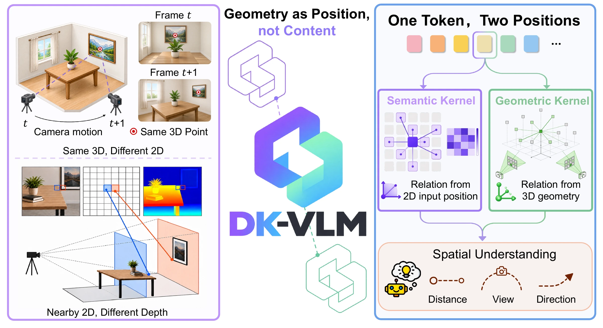

DK-VLM: Geometry as Position for Spatial Reasoning in Vision-Language Models
arXiv, 2026
DK-VLM introduces 3D geometry as position through Dual-Kernel Attention and uses Reference-Frame Composition supervision to improve multi-step spatial reasoning.